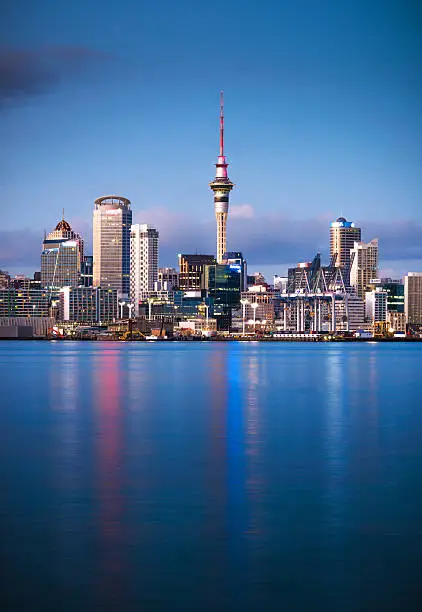

TourNZ
Locais deslumbrantes
Conheça um pouco da Nova Zelândia.
A Nova Zelândia é um paraíso no hemisfério sul, composta por duas ilhas principais que abrigam uma impressionante diversidade de paisagens naturais, como montanhas nevadas, fiordes, lagos cristalinos e praias intocadas. Reconhecida mundialmente por sua preservação ambiental, segurança e qualidade de vida, também se destaca pela forte influência da cultura Maori, presente nas tradições, artes e arquitetura. Cidades como Auckland, Queenstown e Wellington oferecem uma vibrante combinação de modernidade, cultura e aventura. Com distâncias curtas entre as atrações, viajar pelo país é fácil e proporciona experiências autênticas em meio à natureza exuberante.
Capital:
Wellington
Área:
268.021 km²
População:
5,223 milhões
Motivos para visitar Nova Zelândia
Natureza deslumbrante
O país abriga florestas antigas de árvores gigantes, vulcões ativos e adormecidos, fiordes impressionantes esculpidos por geleiras, além de montanhas majestosas cobertas de neve.
Mini viagens
Oferece várias opções de viagens como observação de baleias em Kaikoura, trilhas na Costa de Catlins e degustações de vinho em Marlborough, Hawke’s Bay e Wellington.
Gastronomia de primeira
Oferecendo pratos tradicionais maoris como o hāngī e especialidades locais como pavlova, cordeiro, frutos do mar, batata-doce, mel manuka entre outros.
Onde ir na Nova Zelândia
Viagens para a ilha norte
Sua visita na Ilha Norte pode incluir vulcões, piscinas de lama borbulhante e gêiseres jorrando, relaxar em ilhas idílicas e explorar metrópoles emocionantes.
Viagens para a ilha sul
Lar de 10 dos 14 parques nacionais da Nova Zelândia, a Ilha Sul é conhecida por suas paisagens alpinas de cair o queixo, geleiras geladas e experiências divertidas com a vida selvagem.
Viage de carro pelo país
A Nova Zelândia proporciona viagens de carro espetaculares, com rotas pela Costa Oeste da Ilha Sul, lagos deslumbrantes como Tekapo e Pukaki, e a estrada Twin Coast Discovery na Ilha Norte.
Tradições que encantam
Não deixe de explorar a cultura Maori, população original da Nova Zelândia, que, ao lado dos kiwis, contribui para o charme e a identidade única do país.
Pontos turísticos
Milford Sound
Milford Sound, localizado na Ilha Sul da Nova Zelândia, é um fiorde formado pela erosão das geleiras e pelo vento.
Te Puia
É uma escola dedicada à preservação e ensino das artes tradicionais indígenas Maori, ele abriga as escolas nacionais especializadas em três principais formas de arte Maori
Sky Tower
A Sky Tower é uma torre de comunicação e observação localizada em Auckland. Com 328 metros de altura é um ícone da cidade e um ponto turístico popular
Routeburn Track
A Routeburn Track é uma trilha de 32 km na Ilha Sul, que pode ser percorrida em ambos os sentidos, ligando Queenstown, nos Alpes do Sul, ao Divide, próximo a Milford Sound.
Waiotapu
Waiotapu Thermal Wonderland é um parque geotérmico, famoso por suas piscinas coloridas, gêiseres e formações vulcânicas únicas, localizado próximo a Rotorua.
Te Papa Tongarewa
O Museu da Nova Zelândia Te Papa Tongarewa é o museu nacional da Nova Zelândia. Situa-se em Wellington na ilha norte.
Lake Tekapo
O Lago Tekapo é o segundo maior de três lagos aproximadamente paralelos que correm de norte a sul ao longo da borda norte da Bacia Mackenzie, na Ilha Sul.
Museu Tawhiti
O Museu Tawhiti, localizado em Hāwera é um museu privado conhecido por suas exposições realistas e modelos em escala, que contam a história da região de Taranaki